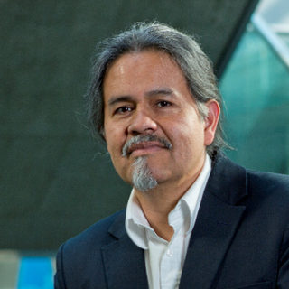

Skip to the content.
Fairness and Robustness in Machine Learning for Ubiquitous Computing (FairComp 2024)
Workshop at UbiComp 2024
Home
Call for Papers
Speakers
Organizers
Program Committee
Program
Accepted Papers
Tentative Speakers

Daniel Gatica-Perez
IDIAP, EPFL, Switzerland